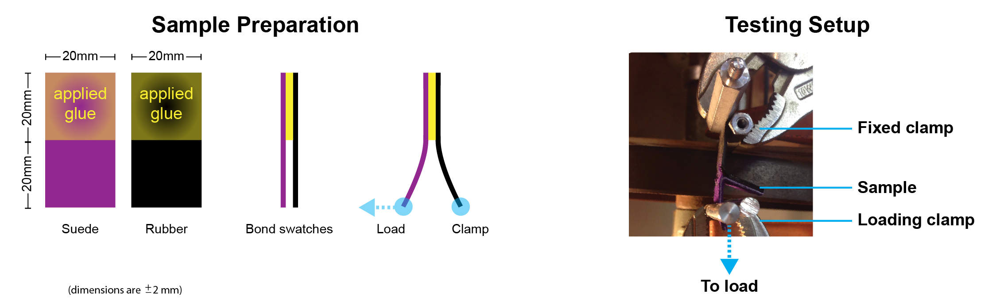

Adhesive Parameters
The rands and soles of SFT shoes were separating from the shoe uppers after 1-2 months of wear, compared to 4+ months for high-end, off-the-shelf shoes. While few of the failures caused loss of function, these debond failures resulted in a perception that SFT shoes were not high quality. I explored how our gluing process parameters affected bond strength (and, by proxy, time to debond failure).
Shoe components (such as rands, soles, and midsoles) are coated with heat-sensitive contact cement and bonded to the shoe upper. There are several factors that can be varied to change the strength of the bond achieved. Bond strength affects the durability and perceived quality of a pair of rock-climbing shoes.

I chose to test how the existing glue process compared to a faster process and to a process that a resoling shop recommended based on their work. The three processes employed different rest times, reheat times, and cure times.
Bond strength was assessed by loading glue samples until the samples began to peel, measuring the width of the area that debonded, and then by inspecting the debonded area for failure mechanism (material failure within the substrates, delamination between substrate and glue layer, or evidence of both).

The samples were too variable to draw preliminary conclusions about cure time and heating time from such a small test. However, there is some correlation between failure mode and bond strength. On samples that failed cohesively, the glue appeared not to have penetrated the suede surface very deeply, so only a superficial layer of suede fibers were torn from the main substrate as the bond failed.
Therefore, I am experimenting further with thinning the contact cement to allow it to soak into the suede, as well as procuring ultrasuede as an alternative upper material since it has a very predictable nap (natural suede shows large variation, unless the manufacturer can afford to purchase and use only a small subset of hide).